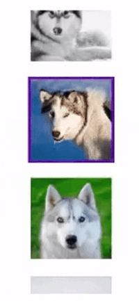

URL TO USER INTERFACE
https://www.petfinder.com/dogs-and-puppies/breeds/canadian-eskimo/
TRIGGERS
The thumbnail image section is displayed to the right of the main photo on the left side of the page, showing multiple images.
RULES
Hover On
- Cursor changes from arrow to finger
Hover Off
- Cursor changes back to an arrow
Click
- When clicked, the thumbnail gains a purple outline to indicate it’s selected.
- The previous active thumbnail loses its purple border
- The thumbnail image scrolls up or down to display the selected photo
FEEDBACK
Hover On
- Cursor changes from arrow to finger
Hover Off
- Cursor changes back to an arrow
Click
- When clicked, the thumbnail gains a purple outline to indicate it’s selected.
- The previous active thumbnail loses its purple border
- The thumbnail image scrolls up or down to display the selected photo
LOOPS & MODES (meta-rules)
